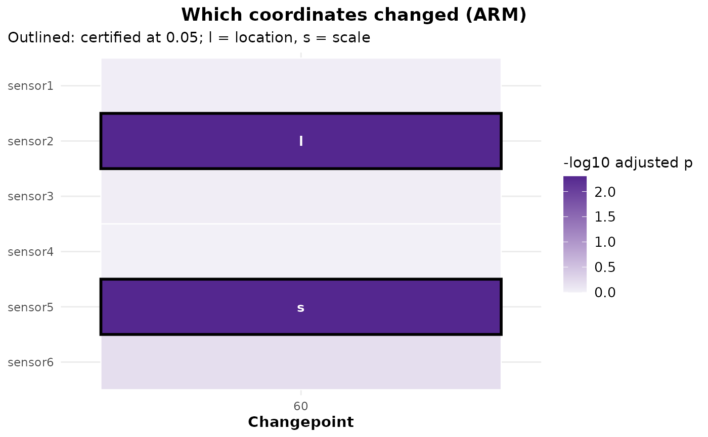

Which coordinates changed? Certified attribution for a multivariate fit
Source:R/attribute.R
cpt_attribute.RdFor each changepoint of a multivariate result, tests every coordinate
for a change in its window and returns the set certified to have
changed, with family-wise error or false discovery rate control and a
location or scale label for each certified coordinate. This is ARM,
attribution by rank maxima (Peng et al. 2026). It accepts the
changepoints of any detector, including a registered one or a result
built with as_ggcpt(), and its guarantee does not depend
on how, or how well, they were located.
Usage
cpt_attribute(
object,
alpha = 0.05,
control = c("fwer", "holm", "fdr"),
B = 999,
margin = NULL,
seed = NULL
)
# S3 method for class 'ggcpt_attribution'
print(x, ...)
# S3 method for class 'ggcpt_attribution'
tidy(x, ...)
# S3 method for class 'ggcpt_attribution'
glance(x, ...)
# S3 method for class 'ggcpt_attribution'
autoplot(object, ...)Arguments
- object
A multivariate
ggcptobject (one that carries two or more coordinates in$data_wide).- alpha
Error level. Defaults to
0.05.- control
What
alphacontrols, within each changepoint's window:"fwer"(default) the family-wise error rate, by a Westfall-Young single-step maxT over joint row permutations, which keeps whatever dependence the coordinates have. Exact when the coordinates that did not change have the same joint distribution before and after the change.
"holm"the family-wise error rate by Holm's procedure on the per-coordinate permutation p-values: valid with no assumption on how the coordinates depend on each other, at some cost in power.
"fdr"the false discovery rate, by Benjamini and Yekutieli's procedure, which holds under any dependence between coordinates. The choice for many coordinates.
- B
Number of permutations. Defaults to
999. The smallest attainable p-value is1 / (B + 1), so Holm and the false discovery rate needBof the order of the number of coordinates divided byalpha; the function warns whenBis too small forcontrolto certify anything.- margin
Smallest number of observations on either side of a split, within the window. Defaults to five per cent of the window, and at least 2. It changes power, not validity.
- seed
Optional seed for the permutations, scoped to this call.
- x
A
ggcpt_attributionobject.- ...
Ignored.
Value
A ggcpt_attribution tibble with one row per changepoint
and coordinate: cp, cp_index (when the result has a time
index), coordinate, statistic (the coordinate's maximum
over splits and channels), statistic_location,
statistic_scale, p_value (the per-coordinate permutation
p-value), p_adjusted (adjusted for control),
changed (TRUE when certified at alpha),
type ("location" or "scale" for a certified
coordinate, NA otherwise), window_start,
window_end, n_window (rows used, after dropping any with
a missing value) and source ("arm"). print(),
autoplot() (a coordinate-by-changepoint map with the certified
cells outlined), tidy() and glance() work on it.
What is certified, and what is not
Each changepoint is examined in its own window: the stretch of the series between its neighbouring changepoints (the whole series for a single changepoint). Coordinate \(j\) is tested for the null hypothesis that its values in the window are identically distributed, that is, that it did not change there. For every split \(t\) of the window the location evidence is the standardised Wilcoxon rank sum and the scale evidence the standardised Mood statistic (squared centred ranks), each computed from that coordinate's own ranks; the coordinate's statistic is the largest of the two over every split. That maximum is what makes the result independent of the detector: no estimate of the location can make a coordinate that did not change look more changed than the maximum already allows for.
The guarantees are per changepoint. With \(K\) changepoints the
chance of any false attribution anywhere is at most \(K\) times
alpha under "fwer" and "holm". They also take the
window as given: the neighbouring changepoints were located from the
same data, so for a fit with several changepoints the guarantee holds
conditionally on those windows, and exactly for a single changepoint.
Rows of the window are assumed independent (permutation is exchangeable
only then), so serially dependent data need care, as everywhere else.
The type label is descriptive and carries no error control of its own:
"scale" when the scale evidence is the larger, "location"
otherwise.
References
Peng C, Wu M, Yan Q, Chen D, Shen Z (2026). “ARM: Detector-Agnostic Changepoint Attribution with Finite-Sample Error Control.” arXiv preprint arXiv:2608.01691.
See also
cpt_confint() for where a changepoint is;
cpt_attribute_event() for attributing a change to a
named event rather than to a coordinate.
Other inference:
cpt_abruptness(),
cpt_assumptions(),
cpt_attribute_event(),
cpt_confint_coverage(),
cpt_effect(),
cpt_gof(),
cpt_k_weights(),
cpt_null_power(),
cpt_robustness(),
cpt_screen(),
cpt_test_at(),
cpt_test_null()
Examples
set.seed(2026)
n <- 120
X <- matrix(rnorm(n * 6), n, 6,
dimnames = list(NULL, paste0("sensor", 1:6)))
X[61:n, 2] <- X[61:n, 2] + 2 # a shift in sensor2
X[61:n, 5] <- X[61:n, 5] * 3 # a scale change in sensor5
fit <- cpt_detect(X, method = "ecp")
att <- cpt_attribute(fit, B = 199, seed = 1)
att
#> ggcpt_attribution (ARM: attribution by rank maxima)
#> Controls: family-wise error (Westfall-Young) at 0.05
#> Permutations: 199
#> Changepoint 60: 2 of 6: sensor2 (location), sensor5 (scale)
#>
#> # A tibble: 6 × 13
#> cp coordinate statistic statistic_location statistic_scale p_value
#> <int> <chr> <dbl> <dbl> <dbl> <dbl>
#> 1 60 sensor1 2.42 1.86 2.42 0.38
#> 2 60 sensor2 8.10 8.10 1.66 0.005
#> 3 60 sensor3 2.44 2.29 2.44 0.37
#> 4 60 sensor4 2.19 1.82 2.19 0.555
#> 5 60 sensor5 5.53 3.20 5.53 0.005
#> 6 60 sensor6 2.77 2.77 1.91 0.165
#> # ℹ 7 more variables: p_adjusted <dbl>, changed <lgl>, type <chr>,
#> # window_start <int>, window_end <int>, n_window <int>, source <chr>
ggplot2::autoplot(att)
